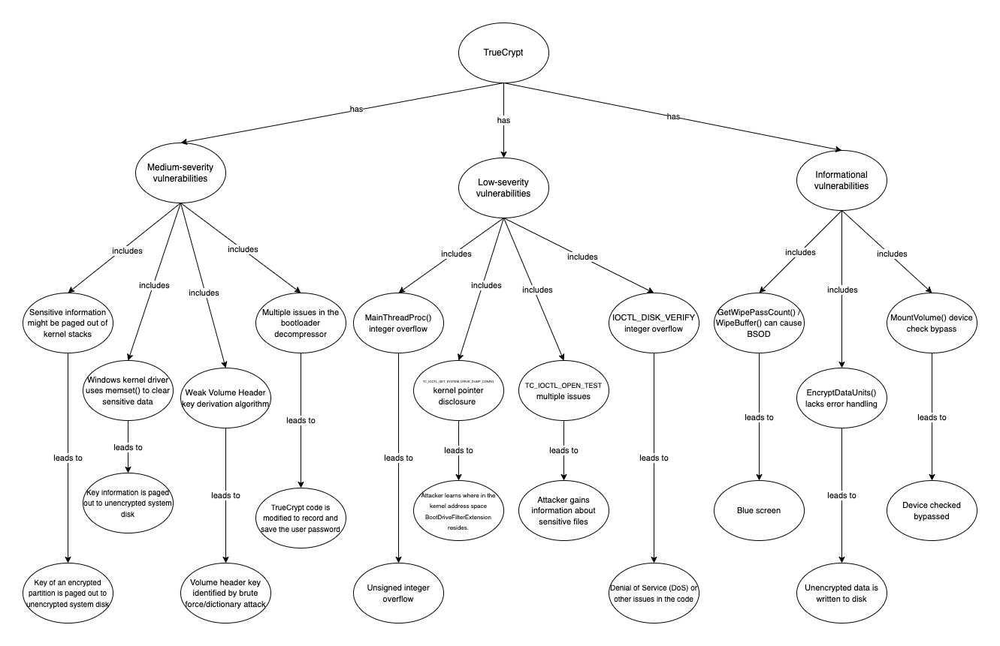

Secure Software
Development
My reflections on the units included within the module.
Unit 1: Introduction to Secure Software Development
My reflections about the unit:
The comparison of the Waterfall approach and agile methodologies with security focus was the central theme this unit. These two approaches have very a very different take on security, documentation and development pace. While agile methodologies, especially Scrum seem to be overlooking security, researches have been trying to bridge the gap with a number of proposals like S-Scrum (Mougouei, et al., 2013) or Secure Scrum (Pohl & Hof, 2015). Since Scrum is a very popular software development framework, the discussion about its approach to security is very relevant to the module and in general, to the state of software development today.
When it comes to the. Waterfall approach, I found ideas put forward by Royce (1970) quite interesting. In his essay in which he describes how he came up with the Waterfall model and benefits and downsides of it, he insists on the importance of extensive documentation and the need to use the software for a substantial period of time before marketing it (i.e. always market the second version of the software). I believe that even though at the time of writing the developers would have had this luxury to spend as much time as they like, these ideas are no longer applicable in today’s pressing market conditions where there is always a pressure to reduce the time-to-market. So, in general terms, even though it can be suggested that the big projects are suitable for Waterfall model and the smaller ones are for Agile methodologies (Casteren, 2017), I think Agile methodologies are more relevant and suitable to today’s market conditions.
Since this unit involves two team projects (design and implementation), we had our first group meeting on Sunday. We agreed on a team contract, set up a GitHub repository and a project management tool (Trello). Since in today’s world where remote working is all the rage, I believe it will be an exciting experience to be a part of a remote development team.
Notes from the team meeting:
In our first team meeting, the agenda was drafting the team contract, as it was supposed to be submitted by Monday evening. We agreed on the terms of the contract and selected Mustafa as the team leader. We also agreed on weekly meetings on Sundays, created Github depositories and forked them, opened a project on Trello, created a Slack workspace and related channels and finally, created a Google Drive folder for easier collaboration. Personally, it felt great to be working in a remote team.
Forum discussion:
Select one of the coding weaknesses which have been identified by OWASP and create a flowchart of the steps which may have led to the weakness occurring.
According to the OWASP Top 10:2021, Identification and Authentication Failures rank seventh among the most common weaknesses (OWASP, 2021). Indeed, even though measures like 2FA and robust password policies are applied widely, it still comes down to the final user to keep his/her credentials and data safe. From my point of view, this human factor remains as one of the weak spots in today’s world, as evidenced by the staggering amount of stolen data/assets online every year (III, N.D.).
Hence, the mitigation to identification and authentication failures needs a two-pillar approach: The technical pillar encompasses robust password policies and additional security checks (e.g. 2FA) that would enforce user compliance. On the other hand, in the user pillar, the users must be aware of the security risks associated with the weak passwords or the potentials vulnerabilities associated with storing credentials or other sensitive information.
In the flowchart (activity diagram) below, a brute force attack is depicted. As we can see, no additional methods like 2FA is in place and the attacker is allowed to try entering the correct credentials for infinite times (i.e. no restriction on number of attempts). The system prompts for credentials and rejects the incorrect ones, but the attacker keeps trying until he/she comes up with the correct one, potentially starting from the common weak passwords (e.g. ‘Password’, ‘12345’, etc.) and making his way towards passwords containing potential personal data (e.g. name, surname, birthdate, etc.). As mentioned above, if the user sets a complex password that is hard to guess and/or there is a 2FA authentication method in place, attacker’s job might get significantly harder.

Figure 1: Activity diagram for brute force to gain unauthorized access.
On the other hand, the attacker may try to follow the “Forgot password” route, as depicted in the activity diagram below:
Figure 2: Activity diagram for an attempt to gain unauthorized access by answering a security question.
In this case, having weak recovery questions that are easy to guess (such as “Your birthday” or “Favorite team”) and not the absence of secondary recovery methods (e.g. mobile phone) makes it easy to reset the password of the victim by the attacker.
Key takeaways:
- Architecture is more about high-level decisions related to the general structure of a software system and the interactions between its components.
- Design deals with the lower-level implementation (modules, classes, patterns, etc.)
- The architecture of the system can most evidently be seen in the structure of the system.
- Modifiability measures the ease to introduce new changes to the system. Coupling and cohesion are two important aspects of modifiability.
- Testability refers to the ease to carry out tests on a software. The more parts of a system can be isolated, the more testable it is.
- Scalability of a system is its capacity to meet the increasing demand from the end users. There are two types of scalability: horizontal and vertical.
- Performance of a system is the amount of work accomplished using given resources in a given period of time.
- Potential security issues with Python include the issues related to reading input and evaluating expressions, overflow errors, serialization issues and those related to the web applications when using frameworks like Flask or Django.
- Agile approach to software development include Scrum, Pair Programming, Dynamic Systems Development Method (DSDM) and Test-Driven Development. In this approach, it is easy to go back to the previous stage(s) of the software if needed.
- The Waterfall model is a sequential approach in which each phase depends on the outputs of the previous phase. Going back to previous phase(s) of the project requires significant overhead. Therefore, it cannot respond to changing requirements.
- Scrum inherently lacks a proper security perspective in favor of rapid software development and deployment. This weakness of Scrum can be mitigated by carious proposals such as S-Scrum or Secure Scrum.
- Secure Scrum relies on S-Tags that are attached to the backlog items to add security-related information/concerns.
- Some UML diagrams are more relevant in different stages of SDLC. For example, use case diagrams are used in the earlier stages, class diagrams are used in software structure design and finally, sequence diagrams are used during information and data phase.
Unit 2: Introduction to Secure Software Development
My reflections about the unit:
This week, the main discussion point was the types of threats towards the cyber security. We continued the collaborative discussion about the OWASP’s Top 10 security threats and there is a consensus that the carelessness of people is the biggest security threat we are facing nowadays. A considerable amount of people seem to be totally oblivious about the importance of setting a proper password, keeping their credentials safe and following basic rules of security. As part of the seminar preparations, I wrote a blog post about how people should be managed to avoid insider attacks, you can read my blog post below.
The agile methodologies allow developers to develop software in a faster and more efficient manner, however, these methods are lacking Security Engineering (SE) processes developed specifically for agile methodologies. Many companies are still using the SE processes that are developed for Waterfall model and it hampers them to fully take advantage of the power of agile methodologies (Sharma & Bawa, 2022). However, it is possible to select some SE processes and activities that are suitable for agile methodologies and there is a need to develop native agile SE processes.
Finally in this week’s seminar, we discussed the points above in an interactive manner.
Notes from the team meeting:
The agenda of our second meeting was to agree on a project concept. Before the meeting I and Aaron came up with some ideas and we put them on the shared document in the Google Drive. In the first meeting, we selected the Netherlands Police Department case. My proposal was about detecting possible criminal nodes and users in the country by sudden peaks in the traffic and by matching location and usage data of the users. I also came up with a draft design of tables and the initial draft of project specifications. However, Aaron’s proposal was more feasible: He proposed to design a system which allows users to report detected vulnerabilities on government websites. We all agreed on implementing that. We combined my initial designs and project specifications with Aaron’s idea and agreed on starting to work on the UML designs.
Seminar preparation questions:
1. Some say that people are the biggest risk of cyber security. Select five terms from ISO/IEC Standard 27000 Section 3 Terms and Definitions and write a 300-word blog post on how people can be managed to overcome cyber security attacks from the inside.
I selected 6 terms from ISO/IEC Standard 27000 Section 3 and wrote a 300-word blog post. You can read the blog post on the Artefacts page.
2. Create a 2-column multi-line table. In the left-hand column, include the software development stages of the Scrum agile life cycle approach to project management. In the right-hand column, describe the processes which you recommend are applied at each stage to ensure that secure software is produced at the end of the development.
Figure 3: Scrum phases (Hygger, 2020)
Phase |
Activity |
|---|---|
| Planning | Initial education Role Matrix Agree on definitions Security requirements |
| Implementation | Secure design principles Coding rules |
| Review | Penetration testing Dynamic analysis Requirements inspection |
| Retrospect | N/A |
| Deployment | N/A |
| Daily Scrum | Security Awareness Minute |
Referring to the work of Sharma & Bana (2022) I came up with the table above. I couldn’t think of any security activity for the phases Retrospect and Deployment. And for Daily Scrum, I thought that having an activity like “Security Awareness Minute” which would include sharing a little story or a catch phrase to raise awareness of the team towards security would be highly relevant. It is important to keep the duration of the Daily Scrum in a 15-minute window, a minute (maybe even less) that would be devoted to security in an engaging way will be well-spent.
Key takeaways:
- There are no existing Security Engineering processes specifically developed for agile methodologies and companies have to rely on the SE processes developed for the waterfall model.
- If heavy security activities are incorporated into agile methodologies, the agility may be lost.
- Sometimes the exploit code is shared publicly by the person(s) who find the problem and it increases the risk for the users of the program.
- When installing the patches, it is important to consider the implications of applying the patch (e.g. downtime, effected components, etc.).
- Only the right amount of details should be given in the patch description, otherwise the tracker can use this information (esp. information about the vulnerabilities and potential attack vectors) to create an exploit.
Unit 3: Programming Languages: History, Concepts & Design
My reflections about the unit:
While we learnt a lot about the Design Patterns and did a lot of reading including the Gang of Four book in the previous module, this week’s reading about the implementation of design patterns in Python was particularly interesting and useful. Since I intend to incorporate some relevant design patters to my coding projects in the future, it helped me a lot to have a clear picture of how it is supposed to be done. Moreover, I am surprised to see that, however unintentionally, I already applied some of the design patterns in my assignment in the previous module. For instance, while designing a software to support a driverless car, I used the Façade pattern to provide a common interface to manage different components (i.e. different classes).
From my point of view, it is useless and far-fetched to try to classify programming languages based on the basic categories like “imperative”, “functional”, “logical” and “object-oriented” because sometimes the difference between these groups are so subtle and in the modern world of programming, this classification doesn’t make much sense anymore. Instead, a classification based on the use cases and the structures/data types may be more significant.
This week we had two code activities. One of them demonstrated the difference between C and Python in terms of the memory management. The other one was about the producer-consumer mechanism.
Notes from the team meeting:
In our third team meeting, the main discussion point was the use case diagram. Mustafa presented his draft use case diagrams. He had three diagrams for each of the actors. However, I thought that it could be better if we had only one diagram with all the actors, use cases and include and extend associations so that an outsider can have an idea about the use cases of the system at a glance. We had a brief discussion about it and agreed on combining them into one use case diagram. We also decided to start working on the class diagram as the next step by writing possible classes of the system to the shared document. Finally, we briefly discussed the team discussion questions.
Team activity: Discussion
1. What factors determine whether a programming language is secure or not?
According to Cifuentes & Bierman (2019), the three important vulnerabilities related to programming languages are buffer errors, injection errors and information leak errors. As they demonstrated in their work, no programming language is immune to all three of these errors and hence, it is not possible to talk about a “secure language”.
2. Could Python be classed as a secure language? Justify your answer.
Even though Python has some mechanisms to manage memory in a more elegant way than some other languages like C, it is still prone to many vulnerabilities like overflow errors or injection attacks (especially in the case of web frameworks). Hence, it is not possible to consider Python as a secure language. However, as demonstrated by (Pillai, 2017), there are some strategies that can be followed in order to write secure code with Python.
3. Python would be a better language to create operating systems than C. Discuss.
Being a high-level language, Python is easier to code and its extensive library support makes it an outstanding language that could be used for a variety of purposes. However, because it is an interpreted language, it is slower. On the other hand, C is a compiled language and it is not only faster but it offers more flexibility. The way it manages the memory is more fitting to create an operating system. Therefore, C is a better language to create an operating system.
Forum discussion: Summary post
In recent years numerous technologies and standards have been introduced to enhance the identification and authentication processes. As a result, as pointed out by Gianluca in his initial post, Identification and Authentication Failures moves down from the second position to seventh position in OWASP Top 10 2021 (OWASP, 2021).
However, I still think that it is one of the most important vulnerability categories because of two reasons:
1. Firstly, it is one of the easiest type of vulnerabilities to be exploited. Attackers can access to victims’ account and/or sensitive data by brute force or dictionary attack -a more specific type of brute force attack- as Dr. Peoples suggested in her reply.
2. It is relatively easy to mitigate the risk. Simply by setting up a complex password compliant to widely accepted standards such as NIST 800-63B (NIST, 2017) or enabling multi-factor authentication, majority of the attacks can be prevented. However, at the same time, it is one of the hardest vulnerability types to be avoided because it requires that the wider public is educated about safe practices about account security. For example, to paraphrase Gianluca’s witty reply to my initial post, setting up an MFA method may be troublesome and may degrade user experience drastically, causing most people to avoid it. The last but not the least, the stat shared by Olalekan in his reply to my initial post is very striking: according to NCSC (2019), 23.2 million victims worldwide relied on “123456” and 3.6 million others on word “password” to secure their accounts.
Finally, from my point of view, this category cannot be thought without Broken Access Control which ranks first in the 2021 edition of OWASP Top 10. It is evident that these two vulnerabilities feed each other and when these two categories are considered together, it is clear that they pose the greatest risk to cyber security.
Codio activities:
1. Buffer overflow in C and Python:
Buffer overflow in C: Only a memory space for 8 characters were allocated in the memory for the user input with “char buf[8]”. So, when user enters an input with more than 8 characters, we get “core dumped” error.
Buffer overflow in Python: When I run the file, I get “IndexError: list assignment index out of range”. This predictable, because the range function tries to reach the 11th, 12th, 13th and 14th index position which doesn’t really exist. When I installed the pylint and run it on the file, I got a couple of syntax errors, but it doesn’t tell how to fix the error. I fixed the error myself by changing “for i in range (0,11):” to “for i in range (0,10):”
2. Producer-consumer mechanism:
How is the queue data structure used to achieve the purpose of the code?
The queue data structure is used as a buffer in which the producer appends the data it produces and the consumer gets the data it requires.
What is the purpose of q.put(I)?
The purpose of this method is to append the product produced by the producer to the buffer (i.e. the queue).
What is achieved by q.get()?
The purpose of this method is to allow the consumer to get the product it requires from the buffer (i.e. the queue).
What functionality is provided by q.join()?
join() method prevents the program from exiting until it receives a task_done signal from the consumer.
Key takeaways:
- PowerShell is an automation platform which consists of a command-line shell, a configuration management framework and a scripting language. It is cross-platform: it runs on Windows, MacOS and Linux (Aiello et al, 2020).
- Modifiability refers to the the ease to make changes to the software and the flexibility of the system to accommodate these changes.
- Spaghetti Code is a piece of code that is lacking a clear structure and a control flow.
- Big ball of mud is a system which lacks a clear structure and consists of several pieces of spaghetti code.
- Copy-Paste Programming is when the same piece of code is used for several times which leads to code-bloat.
- Ego Programming is the programming practice in which a programmer prefers to follow his style instead of the conventions.
- Late binding is the practice of binding values to parameters as late as possible.
- Types of code smell at the class level: God Object, Constant Class, Refused Bequest, Freeloader, Feature Envy.
- Types of code smell at method/function level: Long Method, Parameter Creep, Cyclomatic Complexity, Overly Long/Short Identifiers.
- Cyclomatic Complexity is the measure of the linearly independent paths in the source code. In Python, CC can be measured easily by using mccabe package.
- Steps to refactor the code: (1) Fix complex code first (reduce CC), (2) Do an analysis of the code (run complexity checkers), (3) Fix code smells, (4) Run checkers for code smells, (5) Fix smaller errors like code style or convention errors, (6) Perform a final check.
- When using shallow copy, objects are copied by reference and shared among all instances. On the other hand, when using deep copy, all objects are copied and owned by instances.
- The programs written with high-level languages are converted into machine-readable code in two ways, via a compiler or an interpreter.
- Compiler takes the source code and generates a target code in a machine-readable language in three sets: Analysis, Optimization and Generation.
- The target language may be machine native code or an intermediate language like Java byte code or MSIL/CIL. A code in intermediate language can be run on a virtual machine.
- Interpreters convert the source code block by block and turn it into a tokenized form only. Later on, this tokenized programs are executed by the engine or the program that is specific to the platform and part of the interpreter.
- Compiled programs run faster but they are slower to debug. On the other hand, interpreted programs are easier to debug but slower to run.
- There four core paradigms of programming: Imperative, Functional, Logical and Object-Oriented.
- eval() command can lead to vulnerabilities as it can grant an attacker access to the app or whole operating system.
- Python prevents buffer overflow by automatic out-of-bounds checking and not allowing direct access to the memory.
- Principles of a secure system according to Saltzer & Schroeder (1975): Least Privilege (grand least privilege to the user to accomplish the task), Open Design (do not hide the internals or operations of a system), Fail-Safe Defaults (assume that the credentials are wrong until validated), Separation of Privilege (segregate users into different levels according to the level of trust), The Least Common Mechanism (ensure that the mechanisms used to access resources are not shared.
Unit 4: Exploring Programming Language Concepts
My reflections about the unit:
This week we had the opportunity to explore two important concepts: regex and recursion. I think regex will especially useful for me in the future to validate use input or search for certain patterns in a text. There is also a specific type of regex which causes the system to hang for a long time called “ evil regex”. By using evil regex, attackers can conduct ReDoS attacks so, from a security perspective, it is especially important to use proper regex in order to avoid such vulnerabilities. As part of the seminar preparations, I wrote a simple code to check UK post codes for validity using regex.
Recursion is a subject which I am having difficulty to implement in my coding practices, so I am planning to spend more time to grasp the essence of it. Towers of Hanoi is a perfect example of recursion, however, I am yet to figure out a recurring pattern in the problem to put it to Python code.
Finally, in this week’s seminar we had the opportunity to talk about these two important subjects and I also had the opportunity to briefly present my post code checker to my classmates.
Notes from the team meeting:
The agenda of this week's meeting was UML Use Case Diagram and UML Class Diagram. Before the meeting I put some ideas about thr classes that would be used in the project to our shared document and Gianluca came up with a draft class diagram. During the meeting, which lasted about 4 hours, we worked on the class diagram and discussed the classes and interactions between them thoroughly and came up with the first version of the class diagram. The next task for us is to prepare the UML Activity Diagram and work on the text of the design document.
Portfolio Component:
1. What is ReDOS and what part do ‘Evil Regex’ play?
ReDoS is a specific type of DoS attack in which the attacker exploits the vulnerability in the regex used in the code and inputs an evil regex (I.e. a type of regex that takes a lot of time to process via algorithms used) which causes the system to hang for a long time.
2. What are the common problems associated with the use of regex? How can these be mitigated?
Larson & Kirk (2018) lists common regular expression bugs as follows:
- Bad range
- Incorrect use of anchor
- Incorrect use of character set
- Delimiter mismatch
- Incorrect negation
- Incorrect use of wildcards
- Wrong repeat
From my own experience, I see the incorrect use of wildcards as one of the biggest problems associated with regex because it is easy to commit (i.e. people tend to take the shortcuts without thinking deeply about what unwanted characters are included when using wildcards directly) but on the other hand, with certain level of awareness, it is fairly easy to avoid as well. In my opinion, wildcards should be used sparingly.
I think such errors can be mitigated by using various regex checker tools and raising awareness of the programmers towards possible mistakes related to regex and their consequences.
3. How and why could regex be used as part of a security solution?
Regex is a very powerful tool to validate user input which includes sensitive data like username and password. For example, by using regex, using username in the password can easily be restricted. However, in order to avoid potential attacks carried out using evil regex, the programmer should be very careful to avoid vulnerabilities in the regex.
Key takeaways:
- Regular expressions (regex) are a sequence of characters used to check if a character pattern exists in a text or not.
- Regular expressions are supported by Python via the re library.
- Typical regex errors (which may lead to evil regex attack) include: over-reliance to wildcard (using wildcard instead of exploring possibilities), bad range, bad anchor usage, delimiter mismatch, wrong repeat, incorrect use of characters.
- A regex pattern which causes the system to get stuck (i.e. it takes a long time to process the regex) is called evil regex.
- Regular Expression Denial of Service (ReDoS) is a type of Denial of Service attack in which the attacker inputs a regex that causes the system to hang for a long time.
Unit 5: An Introduction to Testing
My reflections about the unit:
The testing is no wonder one of the most important components of the software development lifecycle. Python offers a lot of testing tools to test the source code, but it takes practice to write test cases and use these tools. Even though we were introduced to the testing libraries that Python offers, thanks to the examples in the core book, for the first time we get the opportunity to see how they can be used by examples and possibly, to get some hands-on experience. I am planning to use some of the tools and write some test cases for the passcode checker program I wrote in the previous unit.
Notes from the team meeting:
In this week’s meeting we worked on the activity diagram in a collaborative way. Before coming to the meeting, Ola prepared a draft activity diagram. However, in fact, it used to cover two activities (reporting vulnerabilities and requesting to delete own personal information). So, we thought that each activity diagram should cover only one scenario and we developed an activity diagram only for submitting vulnerability use case. Since this is the base use case of our system, it would be enough to have this activity diagram only, but it is still open to discussion if we should add more supporting activity diagrams that would support our design.
Portfolio Component:
The Cyclomatic Complexity is commonly considered in modules on testing the validity of code design today. However, in your opinion, should it be? Does it remain relevant today? Specific to the focus of this module, is it relevant in our quest to develop secure software? Justify all opinions which support your argument and share your responses with your team.
From my point of view, Cyclomatic Complexity (CC) is still relevant today, at least to some extent. However, it is not a good course of action to solely rely on this metric to measure the complexity of a source code and it should be used in conjunction with other metrics which takes the complexity of the individual branches and the complexity of the conditions themselves. Because the number of decision points is only one aspect of the complexity, however, the aforementioned aspects might have an important impact on the runtime of the program. However, from my personal point of view, CC still gives an idea about the overall complexity and high CC might be an indication that the code should be refactored.
Key takeaways:
- A testable system is a system which displays its faults and doesn’t hide them.
- Validation is an assessment of the ability of a software to fulfill customers’ needs, whereas verification compares the end product with the specifications defined.
- The later a defect in a piece of software is found, the more costly the subsequences get.
- The input data space refers to the values which may be input by the user of a system.
- Heap-based buffer overflow happens when the memory space reserved for a program is exceeded. On the other hand, stack-based buffer overflow happens when the memory space used for user input of applications is exceeded.
- Documenting the test results is an important step in testing. It helps to ensure that everyone is fully aware which tests were carried out and avoids wrong assumptions that a test was carried out by someone else.
- Modified Condition/Decision Coverage aims to test only important combination of conditions (not all of them) and reduce the testing costs.
- Flake8 and Pylama are Python-specific linters.
- Testability is the degree of with which a software system exposes its faults.
- Functionality testing involves testing the software to verify its functionality. Types of functional testing: whitebox testing, blackbox testing.
- Performance testing measures system's performance in terms of responsiveness and robustness. Types of performance testing: Load testing, stress testing and scalability testing.
- Security testing measures the system’s security.
- Usability testing courses on the user-friendliness of the user interface.
- Installation testing tests and verifies the installation steps of the software.
- Accessibility testing measures the degree of usability by the users with disability.
- Being able to isolate and control the components of the software that is being tested is important.
- Test cases can be created inheriting from unittest’s test case class.
- nose2 automatically detects the test cases that are in the folder that it is run from.
- The code coverage is the degree to which the source code is covered by tests.
- Three approaches to writing integration tests: Bottom-up, Top-down, Big-bang.
- Test-driven Development is an agile approach to software development in which code is written to satisfy a test case and new factions are added as a test case.
Unit 6: Using Linters to Support Python Testing
My reflections about the unit:
Even though I and our team focused on the project design document this week (it was due this week) I also found this week’s topics (which is actually the continuation from the last week) in the core book very interesting. I believe that the discussion about the performance of the software and the performance testing and measurement tools that Python supports will come in handy in the future. From my point of view, understanding the concept of Big-O notation is very important to appreciate the impact of design decisions on the performance of a software.
Debugging was also among the topics that was elaborated on in the core book. I am already aware of the power of print statement for debugging but the specific techniques introduced in the book opened new horizons to me. I am especially looking forward to using the logging library of Python. In some of my past projects I designed a logging function, but I never knew the powerful logging library of Python.
Notes from the team meeting:
Since the design proposal was due this week, we had three meetings. We designed one more activity diagram and worked on the design document and submitted it. We had a very beneficial and constructive discussion on the specifics of the application and took our tutor’s feedback into consideration and made necessary amendments. We will begin working on the source code of the project next week.
Portfolio Component:
1. Run styleLint.py in Codio. What happens when the code is run? Can you modify this code for a more favourable outcome? What amendments have you made to the code?
As one can clearly see, the source code lacks indentation in the first version:
I added correct indentation and also added a print function to the end of the code to make it easier to see that it works properly:
2. Run flake8 on metricTest.py. Can you correct each of the errors returned by flake8? What amendments have you made to the code?
flake8 returned a number of indentation errors and missing whitespaces. I corrected them all to get a clean flake8 output.
Key takeaways:
- Performance Engineering Life Cycle (PELC) parallels the steps in SDLC within the context of performance.
- Stress testing simulates peak workloads to measure the performance of a system under this workload.
- Profiling tools generate statistics about functions.
- Performance complexity is usually represented by Big-O notation.
- timeit module allows programmers to measure the time taken to execute small chunks of code (a function, an expression, etc.)
- Deterministic profiling means that all function calls, function returns, and exception events are monitored, and precise timings are made for the intervals between these events.
- Statistical profiling randomly samples the instruction pointer and deduces where time is being spent.
- The profile and cProfile modules provide support for deterministic profiling in the Python standard library.
- Line profiler profiles the source code line by line and produces more granular statistics.
- Memory profiler profiles lines by memory consumption.
- Each container in Python has a specific use case where it performs better than the others. In order to to increase the performance of the program, appropriate type of container (e.g. list, dictionary, tuple, etc.) should be used./li>
- deque (double ended queue) is a list which supports appends and pops from the both ends of the list. It also supports rotation of elements.
- OrderedDict is a dict that remembers the order of insertion of entries.
- Counter is a subclass of dictionary to keep a count of washable objects. The objects are stored as keys and counts are stored as values.
- namedtuple behaves like a class with fixed fields. It is indexable.
- Bloom filter is a probabilistic data structure which reports true negatives with certainty and true positives with a pre-defined error rate.
- Since Python is a dynamically typed language, type-related exceptions are common due to programmers assuming a type to be something.
- print() can be a really useful debugging tool.
- Steps of debugging the code: (1) Analyze the code (2) Come up with some assumptions about the cause of the bug (3) Test each assumption (4) Repeat until you find the cause of the bug or discard the assumptions and start over.
- logging module is Python’s standard library for logging.
Unit 7: Introduction to Operating Systems
My reflections about the unit:
Since the operating systems are the most important piece of software of the information systems, it is important to appreciate the features of it as well as to develop a better understanding of what is going on under the hood. This week we had the opportunity to look back through the history to see how the operating systems evolved over time. Moreover, key concepts like kernel, process, threads were touched upon. Even though there was nothing completely new to me, it is very helpful to revisit these topics within the context of secure software development. It was astonishing to me that the design principles for secure systems laid out by Saltzer & Schroeder (1975) still very much applies today.
I believe that the true power of Python lies in the modules supported in the Python Standard Library. Thanks to the e-portfolio activities and seminar preparation question, I discover and learn a new module almost every week. For instance, lately I had a hands-on experience with Python’s re module which provides regular expression operations. Likewise, this week, I explored the cmd module which provides a framework for writing line-oriented command interpreters. As a response to the Codio activities, I designed a CLI which supports several basic operations using the cmd module.
Portfolio Component: Developing an API for a Distributed Environment
1. Run the API.py code. Take a screenshot of the terminal output. What command did you use to compile and run the code?
Here’s the terminal output:
As you can also see from the screenshot, I used python api.py command to run the code.
2. Run the following command at the terminal prompt: http://127.0.0.1:5000/user/Ann. What happens when this command is run, and why?
It displays the information for the user “Ann”. It is because this is a “get” request and “get” method defined in the source code prints the user information in the users dictionary to the screen.
3. Run the following command at the terminal prompt: http://127.0.0.1:5000/user/Adam What happens when this command is run, and why?
It returns “user not found” error. Again, this is a “get” request and get method searches for the argument (Adam) in the user dictionary and since it cannot find it there, it returns this error.
4. What capability is achieved by the flask library?
flask library provides necessary tools for a web application that runs on browser.
You can see the source code from here.
Notes from the team meeting:
Due to unexpected developments, we had to shift this week’s meeting which was supposed to be held on Sunday to next week. In the next meeting, we will start to work on the development phase of our team project.
Key takeaways:
- An operating system provides four important functions: (1) Providing interfaces, (2) Resource management and scheduling, (3) Providing abstraction or virtualization layer (4) Providing services and security for users and applications.
- The GUI was also known as a WIMP interface, which stands for Windows, Icons, Mouse and Pointer.
- Kernel is a privileged, supervisory module which helps operating system to control the resource management.
- 3 classical models of kernel are: Monolithic, micro-kernel and exo-kernel.
- Process is the main mechanism for resource allocation. A process is a memory image of the program (which is represented in the file system as an executable file).
- A process consists of one (single-threaded) or multiple (multithreaded) threads. While processes can be seen as a unit of resource allocation, threads can be seen as unit of scheduling.
- The first operating system for the microcomputer was the Control Program/Monitor (or Control Program for Microcomputers) a.k.a. CP/M (1975). CP/M used to consist of three components: BIOS, BDOS (Basic Disc Operating System) and CCP (Console Command Processor).
- Running a GUI increased the number of applications and services on a system thus, increased the attack surface.
- A proxy is a server that performs a number of functions on behalf of a nominated or protected device.
Unit 8: Cryptography and Its Use in Operating Systems
My reflections about the unit:
In my opinion, Cryptography is one of the most interested topics in this module and also in computer science. With protection of information being the focus of modern systems, it will continue to remain relevant in coming years. Hence, learning about the different cryptography methods was very interesting to me. I developed a simple program to encrypt and decrypt a message using base64 algorithm. In the future, I am willing to discover more complex and robust algorithms.
In this week’s forum discussion, we were supposed to review TrueCrypt and also present an ontology depicting the weaknesses of TrueCrypt. Since I had a hard time understanding the concept of ontologies and applying it to this context, I couldn’t come up with a satisfactory ontology. This is certainly an area in which I should improve myself.
Notes from the team meeting:
Since we rescheduled last week’s meeting to Tuesday, we had two meetings this week. On Tuesday, we installed Django and talked about the general structure of the web application that we will develop, according to the design document. Then, we assigned tasks to each member of the group. As the first step, we agreed on focusing on the design first. Therefore, the first tasks only included the designing of homepage, forms, lists, etc. I was tasked to design the pages that General Public will interact with: report vulnerability page, request for deletion of personal information page and finally, view verified vulnerabilities page. Since we had the idea of designing this app as a compilation of microservices, I thought it would be a good idea to have all these three as an app, so I created an app called “report” within our Django project. Then, I went on to create pages. For styling, I created a static folder and relied mostly on bootstrap but I also added a stylesheet of my own. Considering we will have a base layout which would be extended to all the pages, I only focused on the content. Here is how “report a vulnerability” page looks like at the moment:
On Sunday’s meeting, we discussed the current state of the project, assigned some new tasks to the team members and agreed to meet again on Wednesday. Until next meeting, I will work on connecting the Django app I have created to the database so that the input we get from the users can be committed to the database.
Forum discussion:
The (anonymous) TrueCrypt authors have said “Using TrueCrypt is not secure as it may contain unfixed security issues”. Does the cryptanalysis provided above prove or disprove this assumption? * Would you be prepared to recommend TrueCrypt to a friend as a secure storage environment? What caveats (if any) would you add?
TrueCrypt cryptanalysis by Junestam & Guigo (2014) evidently shows that there are a number of vulnerabilities ranging from high-severity to low-severity and informational ones. From my point of view, the most important vulnerabilities that TrueCrypt is susceptible to are:
- Volume Header key derivation algorithm
- Sensitive information might be paged out from kernel stacks
Because, an attacker can easily access the keys and decrypt the volume by performing a brute-force or a dictionary attack by exploiting these vulnerabilities. Even though, as demonstrated by Davies (2014), using a strong password with a salt of 2512 increases the time required to carry out a brute force or a dictionary attack, the aforementioned vulnerabilities are still worrisome when considering the project is no longer maintained since 2014 and there are no recent studies which prove TrueCrypt is still a secure option.
As a result, I wouldn’t recommend TrueCrypt to a friend. However, if a friend of mine has to use it, I’d advise him/her to set a strong password in combination with a salt of 2512, as mentioned above, to decrease the possibility of a brute attack.
Here is an ontology I created for the vulnerabilities detected by the cryptanalysis (Junestam & Guigo, 2014) mentioned above:
Key takeaways:
- Cryptography is the science of concealing message and communication through coded messages.
- Plain text is the human-readable message.
- Cipher text is the output obtained after applying cryptography on plain text.
- Basic characteristics of modern cryptography are: (1) It operates on bit sequences, (2) It uses mathematical algorithms and (3) It requires parties interested in secure communication channel.
- An ontology is a way of naming the concepts, their properties and the relationships between them.
Unit 9: Developing an API for a Distributed Environment
My reflections about the unit:
This week, we had a historical perspective of the evolution of secure software architectures. Now that I see how the architectures have evolved from the monolithic terminal server systems of 1970s to the modern, lightweight architectures; I can appreciate the power and advantages of Microservices better. This week’s reading also helped to develop a better understanding of the benefits of virtualization, containers and REST API which we are also using for our team project.
Notes from the team meeting:
Since the deadline is getting closer, we had two team meetings this week. On Wednesday, we met to discuss our progress so far, based on the tasks defined for each team member. I was tasked to create the models that would support the creation of public users, reporting vulnerabilities and also deleting the personal information of users on request. I came up with two tables - one for user information and one for the vulnerabilities. Here is how my initial model design looks like at the moment:
I also coded the application logic in the views.py file so that every time a user fills in and submits the vulnerability reporting form, a new record is created in the tables. If the user already exists in the database (based on his/her email) user is not recored to the table to avoid duplicate users. Also, users have the option to remain anonymous by leaving the name, surname and email fields blank, as indicated on the screenshot of the reporting form (please refer to the screenshot shared last week). Here’s a snapshot of the Django admin page which displays how a sample vulnerability looks like:
On Sunday, we met again to put everything we did together. Most importantly, me and Aaron merged the tables we created to use the same tables for public user and operator operations. Mustafa did necessary changes in the code so that we overrode the Django default admin page to have just one login for admin and operator users. We agreed on working on the front-end design and and meeting again on next Wednesday.
Key takeaways:
- Types of distributed systems: Client/Server, Mobile Agents, Service Oriented Architecture (SOA), Microservices.
- Client/Server architecture involves a client who sends the requests and a server who has the resources and responds to the requests.
- Limited bandwidth that could be used by the clients is the one of the most important challenges of Client/Server architecture.
- Service-Oriented Architecture (SOA) allows services to be loosely coupled, reusable and dynamically assembled according to changing business environment. SOA is usually used in huge enterprise applications which deal with a high number of requests.
- In SOA, when client starts a request, the request is handled by a middleware called Enterprise Service Bus (ESB).
- The biggest problem with SOA is that it is difficult to modify: to add a small component, whole application might have to be redeployed.
- The aim of the microservices architecture is to break the application into smaller and independent services. Each small service can be designed to be independent and function by their own.
- In microservices architecture, no middleware is used. Instead, dump pipes are used to control the endpoints, reducing the decoupling between the services.
- When designing the microservices, it is important to decide the correct size. The services should neither be too small or too big.
- Virtualization is the process of splitting up physical machine into several virtual components in which each can host a different software to run within.
- Virtual Machines (VM) provide an abstraction layer thanks to which VM is oblivious of the hardware that it is running on. Even though a guest VM is compromised attacker cannot penetrate to the host machine.
- Hypervisor, which is responsible for managing the VMs, create an overhead. Hence, container technologies emerged and gained prominence.
- Containers virtualize an underlying host’s OS and provide a resource-isolated runtime environment, leading to enhanced portability.
- Since each service is located in its own container, they have to be scheduled by Cluster Manager or Cluster Scheduler.
- REST API, which makes use of http features, is the most suitable messaging exchange mechanism for microservices. It relies on http protocol and includes the following methods:
- GET to provide reading access to a resource
- POST to renew an existing resource or create a new resource
- PUT to create a new resource
- DELETE to delete a resource
- In Infrastructure-as-a-Service (IaaS) or Hardware-as-a-Service (HaaS) models, each client is allowed to have their own software configuration on the hardware that Is virtualized.
- In Platform-as-a-Service (PaaS) model, client only manages the applications that he/she installed and configured. Other software and the OS are preconfigured based on the service agreement. Thanks to this arrangement, clients do not have to worry about managing OS updates or security patches and spend his time on development of applications.
- DevOps is an approach in which operations and development engineers work together throughout the SDLC. When DevOps is employed, Agile development goals are achieved.
Unit 10: From Distributed Computing to Microarchitectures
My reflections about the unit:
In this unit, we had the chance to examine the different type of architectures and their strengths and weaknesses. I especially find interesting how microservices were used in a real-life situation, like infectious disease prediction (Calderón-Gómez, et al. 2020). From my point of view, this unit proved very useful for me to develop an understanding of the purpose of the ontologies and how to prepare an ontology. In the end, I revised my ontology that I came up with in the initial post of the collaborative discussion to cover all weaknesses of TrueCrypt.
Notes from the team meeting:
This week we had two meetings and we worked on the finishing touches. We streamlined the design of the pages so that they look similar and added a few tweaks to complement the feature set. Going forward, Mustafa will add threads to the project so that we can display the concurrent data streams and Ola will work on the testing.
Seminar preparation questions:
1. Read the paper: S. Fiore et al. (2019). Making reference to page 117659 and the paragraph which begins, "Through an API or via web pages, ...", write a similar paragraph which is applicable for the system that you have designed and developed.
Through web pages and REST API, the NCTTS web application provides: i) authentication (sign in, create user accounts, delete user accounts), ii) authorization (operator role [can verify and escalate vulnerabilities, change the status of vulnerabilities] and admin role [can add/edit/delete user accounts], manage databases), iii) reporting (submit vulnerability reports, view fixed vulnerabilities) and iV) other features (request deletion of own accounts [public user], send updates to public users via email).
Forum discussion: Summary post
As demonstrated by Junestam & Guigo (2014), TrueCrypt is susceptible to a number of vulnerabilities, ranging from medium-severity to informational. In my opinion, “Volume Header key derivation algorithm” and “Sensitive information might be paged out from kernel stacks” are particularly worrisome.
Even though Davies (2014) suggests some solutions to some of the vulnerabilities of TrueCrypt, these suggestions only help to make it harder to exploit the vulnerabilities and do not make it secure. Most importantly, as Gianluca also agrees, TrueCrypt is not maintained since 2014 and from my point of view, this is a very important indication that it should not be relied on anymore.
Finally, here is an ontology that captures all vulnerabilities of Truecrypt:

Portfolio Component: Faceted data
Read Schmitz et al (2016) article about faceted data. Do you think this is a good approach to protect systems from data leakage? What are the pros and cons?
As demonstrated by Schmitz et al (2016), faceted data involves two types of data: private and public. For users with proper authorization, it displays the private data which is the real value. However, for users without proper authorization, it displays public data, protecting the real value. Therefore, I think it is a good approach for protection against data leakage. However, from my point of view, this is a more complicated approach to the other approaches and it increases the complexity of the program.
Key takeaways:
- Ontology-based information retrieval aims to improve the interface between data and the search request and make queries more efficient and user-friendly.
- Ontology-to-database mapping relates a relational DB schema to an ontology schema.
- Database-to-ontology transformation approaches assume that only a DB schema exists and produce the ontology from the relational database.
- Monolithic architectures are difficult to scale and utilize, especially in case of distributed workforce, but since all components share a common memory and all of them are in the same place, it is usually faster.
- Distributed systems offer many advantages including scalability, reliability and easy upgrades/updates. However, it is vulnerable to attacks (e.g. DoS or DDoS) since the resources are usually distributed.
- In active attacks, the attacker modifies the data being transferred during the transmission or create false transmissions.
- In passive attacks, user just observes, sniffs the network and monitor the data being transmitted.
- The data security is provided by encryption and decryption techniques in distributed systems.
- In Service-Oriented Architecture, Web Services Provider publish Web Services in Web Services Directory so that Web Services Client may find and use them (Find-Bind-Execute paradigm)
- Four SOA standards (from the Open Group) are: SOA RA (supports the achievement of SOA), OSIMM (facilitates incremental adoption of SOA), SGRM (used to tailor SOA governance) and SOA Ontology.
Unit 11: Future trends in Secure Software Development
My reflections about the unit:
In Unit 11, we had an opportunity to have a look into the future trends in the software development, with a special emphasis open the transformation from monolithic structures to microservices. The reading material provided a historical perspective on the evolution of architectures. It was especially interesting for me to get to know concepts like mobile edge computing and fog computing. This unit was not a reading-intensive one and the highlight of this week was the assignment submission. As a team, we were able to put together our coding output and submit it on time. You can read more about it in the team meeting notes.
Notes from the team meeting:
Since this was the last week before the submission, we had three meetings to work on the finishing touches. As always, each member has a different task and I took up the linters. I did a pylint scan on all the Python files in the apps and fixed the errors it detected and silenced the warnings. However, since Django framework sometimes follows other rules and conventions, silencing some errors was not possible.
Finally, on Monday we met for the last time, tested our app together and uploaded it.
Debate: Microservices and Microkernels
Microservices are definitely the future
I strongly believe that the ultimate phase in the evolution of the architectural style for now, microservices (and microkernels) are the future. The benefits of microservices are countless, I’d like to emphasize the most important advantages this architectural style bring from my point of view.
First and foremost, Microservices promote the usability (Usman et al., 2022). In this approach, the design is granular and the whole system is broken down into smaller, stand-alone services which can be integrated into another system if needed. As a result of this, a software architect can easily curate a system by selecting appropriate services that are already developed and integrate them together, making sure that the individual services interact smoothly. In today’s world where time-to-market gains importance, this is a huge step forward. Moreover, thanks to this, software developers can benefit from the expertise of the software development, without “reinventing the steel”.
Another important advantage that microservices provide is the ability to isolate individual components from the rest of the system (Wang et al., 2021). This ability helps the developers to prevent an attack to a service from influencing the entire system negatively.
All in all, I think that, without a doubt, microservices is the state of the art in the software development and it brings a number of advantages to the table.
Key takeaways:
- Despite its advantages, cloud computing has several disadvantages, including latency and jitter.
- Fog computing provides computing, networking and storage services between the end devices and the traditional cloud services.
- Fog computing is characterized by (1) low latency, (2) widespread geographical distribution, (3) mobility, (4) large number of nodes, (5) predominant role of wireless access, (6) heterogeneity, (7) presence of real time applications.
- Mobile edge computing (MEC) provides users with computing services at the edge of mobile networks. Low latency and broad bandwidth are the biggest advantages of MEC.
- Mobile cloud computing is a small cloud infrastructure which is deployed near mobile users which delegates resource-intensive tasks to remote entities.
- Superfluid cloud is a set of virtualization platforms with heterogeneous capabilities.
- Edge paradigms are vulnerable to various types of threats including Denial of Service, man-in-the-middle, rouge gateway/data center, injection of information, etc.
- Latency of security mechanisms is the biggest challenge to secure the edge paradigms.
- Since various different types of communication technologies and protocols are used in edge paradigms, it is necessary for the administrators of these networks to understand and implement the security protocols of these technologies.
- Due to the distributed architecture of edge paradigms, the impact of attacks usually remain local and does not impact whole ecosystem. However, some type of attacks (e.g. rouge infrastructure) that target the core infrastructure can have an impact on the all ecosystem.
- Ownership is an important factor in the security of edge paradigms. If a single company owns all the edge data centers in different locations, it is easier to secure the network. However, in this case, a successful attack on this single company can impact whole system.
- A cyber-physical system (CPS) is an integration of computation with physical process whose behavior is defined by both computational and physical parts of the system.
References:
Abbas, A., Rathje C. A. , Wienbrandt, L. & Schimmler, M. (2012) Dictionary Attack on TrueCrypt with RIVYERA S3-5000, 2012 IEEE 18th International Conference on Parallel and Distributed Systems 93-100. DOI: 10.1109/ICPADS.2012.23.
Aiello, J., Wheeler, S. & Koon, S. (2020) What Is Powershell? Available from: https://docs.microsoft.com/en-us/powershell/scripting/overview?view=powershell-7 [Accessed 6 December 2020].
Casteren, W. V. (2017) The waterfall model and the agile methodologies: a comparison by project characteristics-short.
Davies, A. (2014) A Security Analysis of TrueCrypt: Detecting hidden volumes and operating systems, University of London. Available from: http://www.ma.rhul.ac.uk/static/techrep/2014/RHUL-MA-2014-10.pdf [Accessed 11 November 2022]
Hygger (2020) What is Scrum Process Lifecycle? Available from: https://hygger.io/blog/what-is-scrum-lifecycle/ [Accessed 30 September 2022].
III, (N.D.) Facts + Statistics: Identity theft and cybercrime. Available from: https://www.iii.org/fact-statistic/facts-statistics-identity-theft-and-cybercrime [Accessed 25 September 2022].
ISO (2018) ISO/IEC 27000:2018(en) Information technology — Security techniques — Information security management systems — Overview and vocabulary. Available from: https://www.iso.org/obp/ui/#iso:std:iso-iec:27000:ed-5:v1:en [Accessed 30 September 2022].
Junestam, A & Guigo, N. (2014) Open Crypto Audit Project TrueCrypt Security Assessment. Available from: https://opencryptoaudit.org/reports/iSec_Final_Open_Crypto_Audit_Project_TrueCrypt_Security_Assessment.pdf [Accessed 9 November 2022]
Larson, E. & Kirk, A. (2018) Generating Evil Test Strings for Regular Expressions. 2016 IEEE International Conference on Software Testing, Verification and Validation (ICST) 309-319. DOI: 10.1109/ICST.2016.29.
Mougouei, D., Sani, F. M. & Almasi, M. M. (2013) S-Scrum: a Secure Methodology for Agile Development of Web Service. World of Computer Science and Information Technology Journal (WCSIT) 3(1): 15-19.
NCSC (2019) Most Hacked Passwords revealed as UK Cyber survey exposes gaps in online security. Available from: https://www.ncsc.gov.uk/news/most-hacked-passwords-revealed-as-uk-cyber-survey-exposes-gaps-in-online-security [Accessed 04 October 2022].
NIST (2017) Digital Identity Guidelines: Authentication and Lifecycle Management. DOI: https://doi.org/10.6028/NIST.SP.800-63b
OWASP (2021). OWASP Top 10 - 2021. Available from: https://owasp.org/Top10/ [Accessed 25 September 2022].
Pillai, A. B. (2017) Software Architecture with Python. Birmingham: Packt Publishing Ltd.
Pohl, C. & Hof, H.-J. (2015) 'Secure Scrum: Development of Secure Software with Scrum', The Ninth International Conference on Emerging Security Information, Systems and Technologies – SECURWARE 2015. Venice, Italy, 23-28 August.
Royce, W. W. (1970) Managing the Development of Large Software Systems. Proceedings, IEEE WESCON, 1-9.
Saltzer, J. H., Schroeder, M. D. (1975) The protection of information in computer systems Proceedings of the IEEE 63(9): 1278-1308.
Sharma, A. & Bana, R. K. (2022) Identification and integration of security activities for secure agile development. International Journal of Information Technology 14(2): 1117-1130.
Usman, M., Badampudi, D., Smith, C. & Nayak, H. (2022) An Ecosystem for the Large-Scale Reuse of Microservices in a Cloud-Native Context, IEEE Software 39(5): 68-75. DOI: 10.1109/MS.2022.3167447.
Wang, Y., Kadiyala, H. & Rubin, J. (2021) Promises and challenges of microservices: an exploratory study. Empirical Software Engineering: an International Journal 26(4). DOI: s10.1007/s10664-020-09910-y